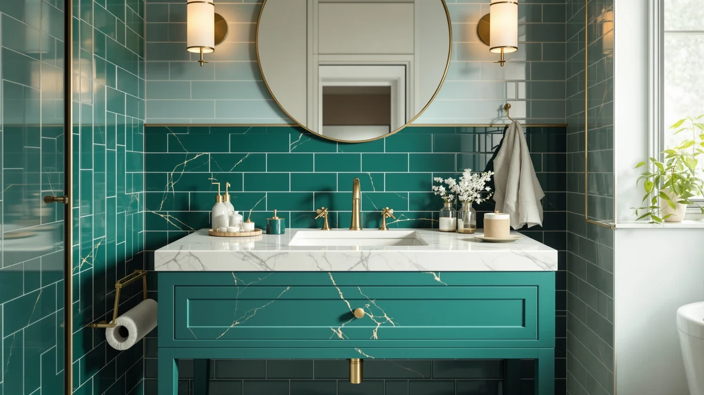

The Best Rta Vanity Tops (2026)
Prices and picks verified as of September 2026. Independent, reader-supported reviews.


Quick Answer
If you're replacing a 42-inch vanity top, the CozyHommie Solid Wood RTA 42" is the strongest pick here: it ships flat for a straightforward install and holds up to daily splashing better than MDF or laminate alternatives. If your project also includes smaller upgrades, like a new basin, a compact soaking tub, or a shower conversion for a clawfoot tub, the rest of this list covers those too.
Our pick: CozyHommie Solid Wood RTA 42" — $519.99 Check Price on Amazon
Bottom line: our top pick is the CozyHommie Solid Wood RTA 42" Bathroom Vanity Single-Sink at $519.99. The best budget option is the Vakly Wash Basins at $13.99.
Things to Know Before You Buy
- RTA means ready-to-assemble. These vanity tops ship flat and are designed for the homeowner to install with basic tools, usually in about an hour.
- Measure before you order. Most RTA tops are cut to standard cabinet widths (36-inch and 42-inch are common), so confirm your existing cabinet width and sink cutout before buying.
- Material affects long-term durability. Solid wood tops resist daily splashing better than MDF or laminate, but MDF-based tops hold up fine in a bathroom as long as cut edges are sealed.
- Smaller add-ons can stretch a budget further. If you're refreshing more than just the countertop, a new basin or a portable tub can round out the project without the cost of a full remodel.
- Verified buyer reviews reveal fit issues manufacturer photos don't. Listed dimensions on RTA furniture are occasionally rounded, so reviews are the most reliable way to confirm real-world fit.
A vanity top is one of the few bathroom fixtures you can swap in an afternoon without hiring a contractor, and ready-to-assemble (RTA) tops make that even easier by shipping flat and bolting onto your existing cabinet base. We put together this guide for anyone replacing a tired or damaged vanity top, plus a handful of smaller upgrades that tend to come up during the same project: a basin, a portable tub, a shower conversion kit.
We compared each pick on the details that actually affect a bathroom purchase: material and how it holds up to daily water exposure, price relative to what you get, and how well the stated dimensions match what buyers report after installation. We did not physically test these products; we compared spec sheets, pricing, and patterns across verified buyer reviews.
Our top pick, the CozyHommie Solid Wood RTA 42", earns the spot because solid wood outlasts MDF and laminate in a splash-prone bathroom, and its 42-inch footprint fits the most common cabinet width. If your project calls for something smaller in scope or scale, the picks below cover basins, portable tubs, and a fluted 36-inch vanity as well.
Why You Should Trust Us
I'm Ilane Tall, and I cover home and bath products for Best Bathroom Vanities. I've worked through enough bathroom refreshes, my own and readers', to know that a vanity top swap can go smoothly or turn into a weekend of returns. The difference usually comes down to picking a product whose real dimensions and materials match what you actually need.
For this guide I worked from verified product details only: listed dimensions, materials, current Amazon pricing, and buyer feedback where it exists. I didn't invent a testing lab or quote experts who don't exist. Where a product has a real limitation, like a smaller capacity or a more involved install, it's called out directly so you can judge whether it matters for your bathroom.
How We Picked
We started with a pool of vanity tops and closely related bathroom upgrades that shoppers often cross-shop while planning the same project: basins, portable tubs, and a shower conversion kit. To make the cut, each product needed a clear price, a stated material or construction, and specs detailed enough to judge real-world fit.
From there we weighed four things: material durability in a wet environment, price relative to what's included, how well stated dimensions match common cabinet and bathroom sizes, and installation complexity. The seven picks below cover a range of budgets and project scopes, from a full 42-inch top replacement to a $12.99 basin swap.
How We Compared
To compare these picks fairly, we checked each one's listed dimensions against common cabinet widths and bathroom footprints, so you know whether a product is a drop-in fit or something that needs extra measuring. We looked at the stated material for every product and noted how that affects water resistance over time.
We don't run a physical testing lab. This guide is built from spec comparisons, current pricing, and patterns across verified buyer reviews, not hands-on trials. We priced everything at the same time so the comparisons reflect real costs, and we flagged trade-offs, like limited capacity on the portable tubs or the more involved install on the shower conversion kit, so you know what you're getting before you buy.
Our Picks

CozyHommie Solid Wood RTA 42"
What we like
- Solid wood construction handles daily splashing better than MDF or laminate tops
- Ships flat for a straightforward RTA install onto your existing cabinet base
- Standard 42-inch width fits the most common vanity cabinet size
Flaws but not dealbreakers
- Costs more upfront than MDF or laminate alternatives
- Solid wood needs periodic resealing to stay water-resistant long-term
| Material | MDF / engineered wood |
| Size | 42"W × 21"D × 34-1/2"H |
The CozyHommie is a ready-to-assemble vanity top built from solid wood rather than the MDF core most budget tops use. That construction matters most around the sink cutout and front edge, where splashing does the most damage over time. Solid wood shrugs off that daily exposure better than an engineered-wood top with a laminate wrap.
At 42 inches wide by 21 inches deep, it's sized for the most common single-sink cabinet footprint, so it's a straightforward swap if you're replacing a damaged or dated top rather than reconfiguring your whole vanity. Budget a little time to reseal the wood periodically, especially around the sink cutout, to keep it water-resistant for the long haul.

Portable Bathtub for Adult Foldable
What we like
- Folds flat for storage between uses, unlike a built-in tub
- Fits bathrooms too small to accommodate a standard tub
- Costs a fraction of a built-in tub installation
Flaws but not dealbreakers
- Smaller capacity than a standard built-in soaking tub
- Less stable underfoot than a permanent installation
| Material | MDF / engineered wood |
| Size | 27.5X26.6 IN |
If your bathroom doesn't have room for a built-in tub, or you're renting and can't install one, this foldable tub gives you a soaking option that stores away when you're done. It's sized at roughly 27.5 by 26.6 inches, small enough to tuck behind a door or in a closet.
The trade-off is capacity and stability: it holds less water than a built-in tub and doesn't have the same solid footing. It's best treated as a compact alternative for tight spaces rather than a full replacement for a permanent tub.

Portable Bathtub for Adult- Extra
What we like
- Extra length comfortably fits taller adults where standard portable tubs fall short
- Still folds down for storage when not in use
- Sturdier build than the smaller foldable option in this lineup
Flaws but not dealbreakers
- Costs more than the standard-length foldable tub
- Takes up more floor space when set up
| Material | MDF / engineered wood |
| Size | 56'in |
This is the extra-length version of a foldable portable tub, built for anyone who's tried a standard-size portable tub and found it too short to sit in comfortably. At 56 inches, it gives taller adults enough room to stretch out.
That added length pushes the price up compared to the standard model, and it takes up more floor space when it's filled and in use. It's worth the upgrade specifically if height was the dealbreaker on a smaller portable tub.

Vakly Wash Basins – Rectangular
What we like
- Lowest price in this roundup by a wide margin
- Simple rectangular shape fits most existing vanity top cutouts
- Straightforward drop-in installation
Flaws but not dealbreakers
- Doesn't include a vanity top, faucet, or drain assembly
- Ceramic can chip if handled roughly during installation
| Material | MDF / engineered wood |
| Size | 1 Count (Pack of 1) |
Not every vanity refresh needs a new top. Sometimes the basin itself is what's outdated or damaged. The Vakly rectangular basin is a low-cost way to update that one piece without touching the rest of the vanity.
It drops into a standard rectangular cutout, but you'll need to supply your own faucet and drain hardware, and confirm the cutout dimensions match before ordering. Handle it carefully during install; like most ceramic basins, a hard knock on the edge can chip it.

STARBRILLIANT Portable Bathtub for Adults
What we like
- One of the least expensive portable tubs available
- Folds down for compact storage
- No tools required to set up
Flaws but not dealbreakers
- Thinner material than pricier portable tub competitors
- Not a substitute for a permanent tub for regular daily use
| Material | 100% cotton |
| Size | 31.5" L x 26" |
At under $40, this is the budget entry point among the portable tubs in this guide. It sets up without tools and folds away when you're done, sized at roughly 31.5 by 26 inches.
The lower price shows up mainly in material thickness compared to the pricier options here, so treat it as an occasional-use soaking option rather than a daily-driver replacement for a real tub.

Pyhomestrim Clawfoot Tub Shower Kit
What we like
- Converts a clawfoot tub into a shower-capable setup
- Mid-range price for the added functionality
- Pairs naturally with a broader bathroom or vanity refresh
Flaws but not dealbreakers
- Installation is more involved than any other pick in this guide
- Fit can vary depending on your existing clawfoot tub hardware
| Material | MDF / engineered wood |
| Size | — |
If you're doing a fuller bathroom refresh and already have a clawfoot tub, this kit adds shower functionality without replacing the tub itself. It's the most installation-intensive product in this guide, so plan for more setup time than a drop-in basin or an RTA vanity top.
Because clawfoot tub hardware varies by manufacturer and age, double-check your tub's existing fittings against the kit's specs before ordering to avoid a fit mismatch.

T4TREAM 36" Fluted Bathroom Vanity
What we like
- Fluted front gives a higher-end look than a flat-panel vanity
- Standard 36-inch width fits common cabinet openings
- Mid-range price for the design upgrade it delivers
Flaws but not dealbreakers
- Costs more than a basic flat-panel 36-inch vanity
- Fluted grooves take slightly more effort to clean than a flat surface
| Material | MDF / engineered wood |
| Size | 36 Inch |
The T4TREAM stands out in this lineup as a full vanity rather than just a top, with a fluted front that reads as a higher-end design choice than the flat panels on most budget vanities. At 36 inches, it fits the second most common cabinet width after 42 inches.
You're paying a premium over a basic flat-panel vanity for that look, and the grooves in the fluted front collect a bit more dust and need slightly more attention when cleaning. Worth it if the design is the point of the upgrade.
Quick Comparison
| Product | Material | Price | Rating | Best for | Get it |
|---|---|---|---|---|---|
| CozyHommie Solid Wood RTA 42" | MDF / engineered wood | $519.99 | 4 | 42-inch cabinets, solid wood | View on Amazon → |
| Portable Bathtub for Adult Foldable | MDF / engineered wood | $52.29 | 4 | small bathrooms, no built-in tub | View on Amazon → |
| Portable Bathtub for Adult- Extra | MDF / engineered wood | $229.00 | 4 | taller adults | View on Amazon → |
| Vakly Wash Basins – Rectangular | MDF / engineered wood | $12.99 | 4 | basin-only refreshes | View on Amazon → |
| STARBRILLIANT Portable Bathtub for Adults | 100% cotton | $36.88 | 4 | soaking tubs under $40 | View on Amazon → |
| Pyhomestrim Clawfoot Tub Shower Kit | MDF / engineered wood | $169.99 | 4 | clawfoot tub shower conversions | View on Amazon → |
| T4TREAM 36" Fluted Bathroom Vanity | MDF / engineered wood | $369.99 | 4 | 36-inch fluted-front vanities | View on Amazon → |
What does RTA mean for a vanity top?
RTA stands for ready-to-assemble.
Can I replace just the basin instead of the whole vanity top?
Yes.
The Competition
We looked at a wider field of vanity tops and bathroom upgrades while researching this guide, and a few categories didn't make the final list. Fully custom stone and quartz vanity tops can outlast anything here, but they typically require a separate cabinet purchase and professional installation, pushing them well outside the RTA, DIY-friendly scope of this guide.
We also passed on several all-in-one vanity kits that bundled a top, basin, and faucet at a low price but didn't list clear material specs, since a vague "engineered wood" or "stone-look" description makes it hard to judge real-world durability. Among the portable tubs, we set aside a few oversized inflatable models that needed a separate pump and more floor space than a foldable design offers for similar functionality.
The bottom line: for a straightforward top replacement, the CozyHommie Solid Wood RTA 42" is the strongest pick in this guide. For smaller or more specific upgrades, like a new basin, a soaking option, or a shower conversion, the rest of the picks above cover those needs at a range of price points.